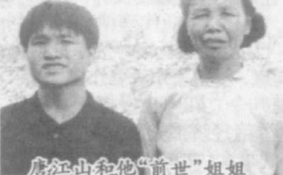

萋萋荒草，诉说着一个村庄一段灾难的历史2002年4月3日下午约2点30分，由陈军助带路，记者、李书光等一行人行往郊外的一片墓葬群，唐江山也陪着把我们送到村口，再也不肯往前走半步了，他请记者理解他的苦衷。（记者开始认为他做秀，稍许就理解了）当时正是艳阳高照，很是闷热难耐，我们来回大约走了二公里路程，个个都是汗透了衣服。那里安葬着在1967年械斗中黄玉村死亡的六位农民。
陈明道的坟墓在一片洼地上，坟茔上长着长长短短的荒草和几棵
那份油印的儋县新英公社原始材料记录当时的情况为：1967年9月7日下午2时许，我黄玉大队8位同志，因公前往洋浦购买柴油开碾米机，被几十人用枪、长矛、大刀、匕首等器械包围着打死的。当时他们处于三面是水的绝地，手又无寸铁，身又受枪伤。为了逃生，各自投身落水，泅水往东逃命，结果死了六人。
有关陈明道的文字是这样记载的：陈明道同志，
唐江山估计我们到墓地快要返回来的时候，他主动到村口去接我们。
他很真诚地对记者说，这么热的天，感谢记者对他的事情的关心，不能全程陪同采访感到很抱歉。因为他来黄玉村这边，确确实实是有去三个地方感到很害怕：一是陈明道的墓地；二是陈明道被打死的地方；三是同黄玉村之间进行武斗的村庄。他一到那附近心里就发憷。
（
陈维老人的悲泣声，让我们对死去的陈明道有一个更深的了解。下午四时许，当我们从墓地回到陈军助的家里时，记者见到一位白头发的老人正坐在一张桌子旁哭泣。
这位老人叫陈维，现年66岁，也是陈明道生前的好朋友。他悲泣地告诉记者：“陈明道是一个好青年，是一个好兄弟。他活着的时候经常为乡邻做好事，他是民兵连长，他领导全村人修水利，发动群众搞好农业生产，苦活、脏活、累活他都争着去干，从来不计较个人的得失。并且他还会唱山歌，是村里毛泽东思想文艺宣传队队长，人长得英俊。还会开二吨半的东方红牌拖拉机和柴油车。他小时候就没有了母亲，家里贫穷。是在新英第一中学读书，初中毕业后就没钱上学了。”
另一位65岁的老人李帝富回忆说：陈明道活着的时候，是很正派的青年，从来不惹事生非，对老人很尊敬。比如为孤寡老人挑水，农忙的时候主动上门问需要什么帮助。只要是他能够做到的，决不会推辞，是很受欢迎的一个青年。
记者听完他俩讲述后，还想寻找一些更加有力的证据，于是要求陈军助帮忙寻找到村中年龄最长的老人和村委会的干部。由陈军助带路，记者和李书光等人往村庄东北方向的村中年龄最长的、90岁的冯二爸老人的四合院走去。恰巧冯二爸老人的三儿子冯刚举（黄玉村副村长），正在家做煤球。90岁的冯二爸老人神智还一点不糊涂，他断断续续地说：“陈赞英和陈明道父子两个人都是老实人，是好兄弟……”
冯刚举停下手中的活计，忙去内屋搬出来电风扇，泡茶递烟。这是一个典型的中国农村传统家庭，四世同堂，日子过得安安稳稳，并然有序。他有条不紊地讲述着：“我当了二十多年的村干部，包括两村之间为唐江山第二次来认亲时武斗、打架，我都是现场见证人。我们村委会对此事的态度是不宣扬，也不否定。反正两村已经和好了，已经化干戈为玉帛了。从唐江山在我们村这来来往往的近二十年间，他的品行还算端正。当初我们村委会牵头为陈赞英老人修房子，一是出自集体的温暖，二是陈明道活着的时候人缘不错，是一个让人称道的好孩子，三是当时这件事本身确实是有几分奇异。唐江山认陈赞英为父，在物质上他没有什么利益。他来认亲是东方那边父亲亲自跟来的（路线还是6岁的唐江山指引的）讲且两地相隔那么远，八辈子够不着，从心理上也得不到多大的好处。”
下午5时许，记者返回新英镇上，采访了陈明道的大姐陈木彩。她63岁，这个老人在慈善的面容后透视出一种精明。她说：“我就只有陈明道这么一个弟弟，他读书时，我就已经出嫁了。我的婆家经济条件相对好一些。在我力所能及的范围内，我总是给他一些帮助。他的嘴巴非常甜，并且会做事，我的丈夫也就非常喜欢这个小舅子。如果我丈夫不喜欢他的话，那么我经常给他钱，肯定就会吵嘴。我弟弟遭难后，我的丈夫抱着他的尸体嚎啕大哭。唐江山来认亲后，我问他，我的弟弟前世身上有什么特征时，他说陈明道的左腋窝有一颗大黑痣。就凭这一点，我就认他了……”记者接着问她：黄玉村的陈维老人说，陈明道是读完初中后就辍学了，原因是家里穷，同你介绍的事实有点矛盾，你能谈谈这中间的真实原因吗？“我说的给我弟弟的帮助也是极其有限的，慢慢地我也生了多个孩子，自己也照顾不过来了。那时候大家都很穷，也不像现在这样，万儿八千的还可以凑出采。我弟弟当时初中毕业后主要是想去当兵，但那时名额非常有限，最后被一个有关系的人顶替上了。接着就加入了村里的民兵组织，再以后文化大革命就爆发了……”
记者在采访中感觉到，陈木彩的小孩子和媳妇都对唐江山很客气。他们现在都比唐江山大，但他们都亲热地叫唐江山小舅。陈明道的四妹陈木兰，52岁，不大善于言辞，她慢吞吞地回忆说：我哥哥1967年出事后，我的父亲很惨，每天都是以泪洗面，不吃不喝，东跑西颠。总之是唐江山去认亲后，我父亲的病情才有控制。唐江山没有得到我父亲一分钱的财产。至于他是不是两世人的问题，应该由科学去研究，但我们家的亲朋好友都是把他当作我死去的哥哥陈明道的。
寻找重要证人谢树香下午6时许，记者从新英镇租一辆边三轮车赶往中和镇黄江村寻找陈明道死前的女朋友谢树香。不料，谢树香已经搬迁到儋州市内。于是，记者与唐江山在陈军助的引导下一起从中和镇坐车去儋州市内寻找。三轮摩托车行驶在坑坑洼洼的乡间公路上，险些一头栽进路旁的一个鱼塘里。陈军助寻找谢树香直到夜晚11点30分才有消息，他急匆匆跑回记者往的旅店，喜滋滋地说：“谢树香找到了，离我们往的旅店还不远。”“好，我们马上出发……”在记者见到英俊潇洒的陈明道遗像时，加上村里人的介绍，陈明道会唱山歌的特长，我就一直臆想着他们初恋时见面情景：也许就是当年一首类似陕北民歌“兰花花”的儋州民歌深深打动了一个十六岁花季少女的心。“青线线（那个）蓝线线蓝格英英采，生下一个兰花花实是爱死人……”
谢树香现年53岁，从脸上的轮廓看，她年轻的很漂亮。认识陈明道时18岁，比陈明道小2岁。如果陈明道不出事，他们是计划1968年内结婚。她现在的丈夫叫赵令保，在儋州市中和镇小学教书，他们是1969年结婚。婚后
记者要求她证实1982年唐江山去黄玉村认亲的时候，她是否在场？唐江山是否能叫出她的名字？当时他们是否抱头痛哭？
她说：“6岁时唐江山到儋州认亲时，我已经是几个孩子的母亲了。我是同我的妹妹一起去的，开始我不敢上前，躲在人堆中，是唐江山一眼认出了我，并叫出了我的名字。我当时很害怕，但当时围看那么多的人为我壮胆，我就不怕了，并说出了我们交往的经过。我就信了他，就抱着他大哭起来。我同陈明道也是有很深的
她说，当年认亲的事，这是一个很怪异的现象。她在丈夫面前并不回避过去同陈明道的交往，她现在生活得很幸福，丈夫很爱她，并很顾家，是一个模范丈夫。她在这个家庭很有地位。
据知情者介绍，谢树香同陈明道的交往中有这样的一段经历（记者根据知情者的介绍作出了如下的臆想）：1966年，在一个春意盎然、弯弯的月儿把一轮清晖洒在北门江的江堤上的夜晚。陈明道邀谢树香去北门江堤散步，青春的激情正在他们的心中燃烧。他们携手在花草丛中追逐，倘佯在幸福的遐想中，不料草丛中窜出一条毒蛇，猛咬了谢树香一口，她的脚背立即红肿起来，陈明道俯下身去用口深深地为她吮吸毒汁，然后把身上穿的一件白衬衫的袖子撕破为她包扎，而把她一步步背回家。三十多年前发生的那一幕，她还有隐约的有记忆。在陈明道出事的最初的一段时间，她万念俱焚，遁入空门的念头非常强烈。
谢树香对记者和唐江山都很热情。我们在4日零时后分别，她紧握着唐江山的手，问寒问暖，热情地邀请唐江山带现在的爱人到她家作客。也许，这是一个大姐姐对小弟弟的关心，也许她还想到了一些其它事情。当我们离开她的家时，看到了谢树香的眼里噙满了晶莹的泪花……。也就在这一刹那，记者幡然醒悟，突然想起了爱尔兰诗人叶芝的那首《当你老了》的诗：
当你老了，头白了，睡思昏沉，
炉火旁打盹，请取下这部诗歌，
慢慢读，回想你过去眼神的柔和，
回想它们过去的浓重的阴影；
多少人爱你年轻欢畅的时候，
爱慕你的美丽、假意或真心，
只
爱你衰老了的脑上的
垂下头采，在红光闪耀的炉子旁，
凄然地轻轻诉说那爱情的消逝，
在头顶的山上它缓缓踱着步子，
在一群星星中间隐藏着脸庞。
是的，陈明道的脸庞已经隐藏在星星居往的天国里，谢树香也许从没有读过叶芝的诗，但她心灵隐藏的情感丝毫也不比但丁的小姑娘亚德丽采、维特拉克的小姑娘劳拉、《廊桥遗梦》中弗郎西斯卡对詹姆斯的感情逊色。让我们尽情地赞美这人类最朴素和真挚的情感吧。爱是人
2002年4月10日，记者、唐江山（现在海口打临工）、李书光同中国遗传学会理事、中华医学会医学遗传委员会委员、海南省人民医院中心实验室主任、研究员、硕士生导师、海南省遗传学会秘书长符生苗先生等一行沿着西线高速公路向东方市方向出发，一路上李书光同我打趣说：《东方女性》杂志调查东方市“两世人”，揭开东方世界的生命奥秘，是一种巧合，是一种机缘，更是一种胆识和智慧，是件追求认识客观世界的好事情。因有先前儋州之行的愉快合作，我们的这次交谈就随意多了。李书光还是一个很有幽默感的人，他一直有一种对科学勇于探索的精神。20多年前，他在海南人民医院工作期间，就在《中华医学检验杂志》、《新医学》杂志发表了《一例枸椽酸杆菌误鉴分析》（1984年《中华医学检验》杂志第7卷第4期257页）和《肠道蝇蛆病1例报告》（《新医学》1984年7期第369页）等很有价值的学术论文。我们一路上有说有笑，气氛很融洽。由于有专家提前介入调查“唐江山的家谱和他母亲林顺流的家谱”，记者对东方之行的采访充满了
4月10日晚20点，记者一行赶到东方市，在宾馆往下后，李书光的朋友文云豪先生热情地接待了我们。记者在晚上10点正，开始对李书光和符生苗研究员进行了专访：
记者：请你谈谈对唐江山“
李书光：我已写成《对唐江山“转世”现象的思考》一文。我认为用封建
记者请教符生苗研究员，他的回答简明扼要，蕴含着一个科学工作者的严谨性和前瞻性：我认为李书光先生的思考是很有价值的，我绝大部分同意他的假设。人类基因组有某些多态性。这是生命科学中的一种形式。陈明道和唐江山不可能是同一受精卵所生，但基因组中记忆功能基因的相同性是有它的边缘性和前瞻性的，这是一个很有发展前景的新课题。目前，我们对“唐江山事件”介入了家谱凋查，可能的话我们会介入部分研究工作。（生死书评：如果研究方向错误了，即使研究一万年也是白白浪费时间。）
唐崇进夫妇讲述儿子的出生和第一次认亲经历 4月11号早，记者和李书光、符生苗、唐江山等一行人从东方市内出友前往感城镇的不磨村，天上下起了毛毛细雨，道路湿漉漉的。道路两旁的
唐崇进介绍说：唐江山从三四岁时起，就曾多次对他说，‘我不是这里人，我的家乡是靠近港口的’，‘我不是东方人，我是儋州（即儋县）人，名叫陈明道，家居儋州新英镇黄玉村，我知道父亲叫三爹’，‘我是被人打死的，我被击中脑后一刀，左腹一刀，左后背一子弹从接近左腰刀伤处通过’。唐江山在不磨村出生时，头部没有疤痕，但左腰刀伤疤痕清晰可见。这些疤痕至今还隐约可辨。在他快到5岁时，就吵着要我带他去儋州，我说我不认识路，怎么带你去？他说，他认识路，说完就在地下画路线图。他说从东方怎么坐车，到儋州后又怎么走，从儋州到新英又怎么走，从新英到黄玉村又怎么走，讲得头头是道。因为他老是这样缠着我，我实在没有办法。于是在他6岁那年终于跟他去了一趟儋州。令人更加奇怪的是，他还会讲一口儋州话，我们不磨村这边是不讲儋州话的，并且从来没有人教他的。他第一次就能够叫出这么多亲朋好友的名字，这个事件太奇异了，我是他的父亲都不理解，其他的人就更不理解了。他是怎么出生的应该由科学家去研究。
自从1982年认亲后陈赞英老人来过不磨村三次，我也经常去儋州那边。陈赞英老人生前的生活我们也有过一定的照顾，过世时，棺材是由我们这边操办的。他的二哥陈军助也经常来不磨村，这二十多年我们一直是当亲戚走的，比亲戚还要亲。我第一次去的时候还同陈军助一起在儋州的“苏东坡书院”照过相。正在我们交谈的中间，唐江山的母亲林顺流回来了。这个50多岁的女人显得十分苍老，她一生生了9个孩子，她介绍说：唐江山出生时刚好天亮，农村正在做早饭。他是在村里出生的，没有钱去医院。刚生下时被一层透明的薄膜（胎膜）包着，好像一个盘，一块东西圆而扁的。孩子就在这块东西里面，挣扎着怎么也出不来。大人们看见孩子在里面大哭不止，就是无法把他取出来，我心里焦急担心极了。后来他的外公来了，他用农村的俗法，取来一本书，用那本书扇了3次，那块膜便破了。我生其他的八个孩子时，从来就没有这样的现象，都很顺利。唐江山就这样艰难地来到了人世间。（记者以后走访了一个研究胚胎学的专家，他说孩子的胞膜有厚薄之分，可能是唐江山出生的胎膜厚一点，没有什么奇怪的，是正常现象。）随后，记者采访了唐江山读小学的老师，60岁的曾文德老师回忆说：关于唐江山的事情，在不磨村的年龄在三十多岁的人都是知道的。人们已经接受了唐江山是“二世人”这样的一个事实，当时有很多人采不磨村看他。自从唐江山长大后，这件事情大家就不经常挂在口头上了。我们这个村庄是有读书传统的，明朝曾经出了一个举人叫张子孙，县志上是有记载的。从我们不磨村读小学出去的学生，每年都有七八个考上大学的，所以这个村庄不算是愚昧的村子，而且很有文化的。唐江山只读了小学二年级就没有读书了，这个孩子爱动，学习成绩一般，也没有什么特别的地方。当时在采访现场的杨泽伦老师（50岁）和苏宋雄校长都证实了这件事。
唐江山的妻子叫梁泽新，记者见到她的时候，她正在搅拌猪饲料，她忙回到房子里换上一件干净的衣服。当记者问到她是怎么认识唐江山的时候，她说他们是一个村的，从小就认识，并目两家相隔很近的。她也从做小孩子的时候就知道唐江山是“两世人”的事情。她的父母是反对他们的
凭什么会有这么多人介入这件事呢？凭什么会有这么多人要为唐江山做证人呢？他们又从中得到了什么好处呢？唐江山的事情，在儋州和东方有近万人知道这件事，是不是谎言讲了一千遍就是真理了呢？是什么人有这样的能力策划这庞大的事情呢？……质疑者最后也不得不承认，也许这件事还真有这么回事。还有一种人提出了这样的假设：陈明道和唐江山是不是同一个受精卵的产物？提出这个问题的人自己都觉得无聊，最后自己否定了这个荒谬的想法。现代科学研究表明：音乐、数学、
但丁在《神曲》中的开头唱出：“在人生的半途中迷失走入黑暗的森林中……”在黑暗的森林中，出现了诗人维吉尔为他带路，走过层层
《我们真的发现“二世人”了？》
此文来自《东方女性》杂志2002年第7期
3月28日上午，像往常一样上班后编辑们悠闲自得地冒报、聊天，讲昨晚各自听到、看到的趣事和感想。不一会儿，一位50岁上下的中年男子带着一份厚厚的稿子和光盘来到我的办公至，称是《天涯》杂志副主编李少君介绍来找我的。我客套例行公事地将他介绍给新来的编辑李刚。因为在我的经验中，亲自送上门的稿件大多都是劣质的，就像送上门来的爱是粗糙的一样。
果真，这篇稿件泥牛入海没了下文。
几天后的一个晚上，记者朱必松在电话中喊着对我说：他见到了一位二世人，并且正和这位二世人在一起。由于他激动得好像要把电话烫焦，我听不清他具体还说了些什么，但我直觉到他发现了一条大新闻。
10分钟后我来到位于海口市龙昆南路的世纪茶艺馆。见到的竟是几天前去我办公室送稿件的中年人和跟在他身后的小伙子！朱记者向我介绍，中年人叫李书光，海南省计划生育局干部，年轻人叫唐江山，东方市感城人，是儋州市新英镇陈明道的再生。
“一定是骗子！”不由思考我在脑子里立即做出判断。
但在听完李书光和唐江山的介绍后，我对自己的判断开始有些怀疑起来：
唐江山坐在我的对面，有些木呐。他既不称自己有特异功能，能看透人的前生或后世，或能
这个李书光是政府部门的副处级干部，他向我们提供二世人的奇闻，目的又是什么？
出自好奇之心？被唐江山骗了？或被唐江山背后的策划者骗了？或李书光与唐江山联手来行骗？
第二天我向编委会做了汇报。编委会决定对这一事件进行深入采访调查。如果是虚假的，我们给予揭露；如果是真实的，我们公开报道。
但讨论中我们对它结果的真实性仍感恐惧。
如果是真实的，不就证明有了二世人？
承认世间有二世人不就证明了灵魂不灭？
天啊！这哪是一则新闻！哪里仅仅是一个传奇故事！简直是恐怖分子在科学大楼里投放的原子弹！
我们是《东方女性》，不是《科学探索》，我们要的仅仅是读者感兴趣的新闻故事。我们无力探讨二世人及灵魂归向之类的大问题，那是只有大哲学家、大科学家们才能碰的东西。
我们是马克思主义
但我们的新闻凋查大出我们的意料：唐江山的前世今生传奇获得了今生父母和前世父母姐妹的认可！获得当地百姓的认可！
唐江山的亲人，唐江山“前世”陈明道的家人及双方村民都承认唐江山就是陈明道再生的事实！
难道唐江山今生前世的亲人承认唐江山就是陈明道的再生，就能证明唐江山是二世人？
显然承认事实与事实本身有的是不能划等号的，我们不能肯定唐江山就是二世人。那么，我们能不顾这些调查的事实，用我们的观念去否认它吗？
至少有一点我们是肯定的。用理性的尊重事实的态度，如实地向社会公开报道，不仅有利于澄清事实，而且有利于科学研究。
我们希望我们的报道能引起社会关注，特别是科学家的关注。
我们希望尽快解开二世人唐江山之谜。